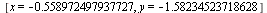
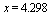
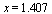
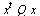
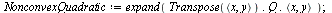
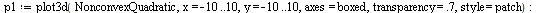
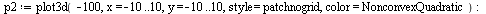
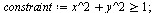

SolveGeneral: calling global optimization solver
SolveGeneral: number of problem variables 1
SolveGeneral: number of nonlinear inequality constraints 0
SolveGeneral: number of nonlinear equality constraints 0
SolveGeneral: method multistart
SolveGeneral: merit function evaluation limit 1000
SolveGeneral: non-improving merit function evaluation limit 200
SolveGeneral: constraint penalty multiplier 100.0
SolveGeneral: target merit function value -0.10e11
SolveGeneral: local search target objective function value -0.10e11
SolveGeneral: local search feasibility tolerance 0.10e-5
SolveGeneral: local search optimality tolerance 0.10e-5
SolveGeneral: time limit in seconds 100 |
SolveGeneral: trying evalhf mode
SolveGeneral: total number of function evaluations 1120
SolveGeneral: runtime in external solver 0.
SolveGeneral: maximum constraint infeasibility 0.
SolveGeneral: cycling or stall detected in solver |
|
(2.2.3) |
通常，infolevel 设置为默认值 0。
下面是一个例子，使用线性方法不能发现全局最小值，但全局求解器可以发现最优值。
例子：
考虑一个非线性方程组：
最小二乘误差函数有多个极值。
为了求最小二乘误差的全局最小值，定义要优化的目标函数和约束。
首先，使用Maple内置的
Optimization
程序包求局部解。由于方程组的复杂性，线性优化求解器并不能发现可行的解。
| Error, (in Optimization:-NLPSolve) no improved point could be found |
|
然而，全局优化算法可以发现全局最小值。
 |
|  |
(2.2.6) |
代入约束函数，结果显示最小二乘逼近是相当精确的解。也就是说，发生在该最小点上的最小二乘逼近的误差非常小。
通过了解上面的例子，您可以有信心使用全局优化工具箱求解任意复杂的数学问题。
四次多项式
求四次多项式在区间 [0, 5] 上的全局最小值。注意该函数是一个非凸函数，有两个局部最小值。
取决于给出的起始点，内置的局部 NLP 求解器返回位于  处的全局最小值，或者是位于  处的次优局部最小值。
![[-1.71396627012779357, [x = HFloat(1.4067993306872324)]]](images/全局优化应用_65.gif) |
|
|
|
(2.3.2) |
全局优化求解器总是求全局最小值。注意到调用格式并不依赖于起始点，但需要 x 的有限范围，这个问题定义为 0..5。
非凸二次函数
求一个二维非凸二次函数在矩形区域上的全局最小值。
使用非正定矩阵构建非凸函数。
| > |
`(`<,>`(1.9, -3.5), `<,>`(5, -`/`(1, 3)))); 1" align="center" border="0"> |
检查该矩阵是否是正定的。
构建函数 。
| > |
`(x, y)), Q), `<,>`(x, y))); 1" align="center" border="0"> |
对函数绘图并画出等高线图。全局最小值发生在[3.947, -10.000] 和 [-3.947, 10.000]，鞍点发生在 [0, 0]。
| > |



|
从大部分起始点出发，Maple局部优化求解器会发现发生在[3.947, -10.000]上的全局最小值。
如果起始点选择不佳，局部优化求解器会停止在鞍点 [0, 0] 上。求解诶其停止的原因是它发现在当前点是零梯度。鞍点有零梯度但不是极值。
全局优化求解器总是发现两个全局最小值中的一个。必须定义x和y的有限范围。
非凸可行区域
求一个二维凸函数在一个缺失单位圆盘的平面上的全局最小值，这是一个非凸区域。
| > |
=`(`+`(`*`(`^`(x, 2)), `*`(`^`(y, 2))), 1); 1" align="center" border="0"> |
全局最小值发生在近似点 [.707, -.707]，见下图中的可行区域边界的红圈，同时显示了目标函数的几个等高线。
起点是[-2, 2]，Maple局部优化求解器发现在近似点 [-.707, .707] 处的非最优局部最小值，表示为蓝色。目标函数在[-.707, .707]上的梯度垂直于可行区域的边界，终止了局部搜索。
局部搜索从 [-2, 2] 开始发现次优局部最小值。
全局搜索发现全局最小值发生在[.707, -.707]。
高维平坦函数
考虑一个四维函数，这个函数有一个非常平坦、但非定常、靠近全局最小值的区域。局部搜索方法往往发现这个平坦区域，但在发现全局最优值之前终止，原因是函数在该区域上的梯度接近于0。
全局最小值发生在 = = = = 1。为了查看为什么这个函数难以最小化，考虑它在 和 上的2-D投影。
等高线表明该函数砸原点附近非常平坦。局部搜索方法通常在这样的区域找到局部最小值，并终止搜索。
| > |
 |
Maple的局部搜索在找到全局最小值之前已经终止，但是全局搜索可以轻松发现最小值。
2. 全局优化的应用
在上一节中，通过几个简单的例子说明了全局搜索方法如何大大优于局部搜索方法。下面是几个应用全局优化解决实际问题的范例。
汽车悬架系统的调校
考虑悬架系统设计中的问题，显示路面颠簸时的响应。问题变量是弹簧常数 k 和阻尼常数 b。每个车轮上车重给定，m，以及一个典型的颠簸的期望幅度，求 k 和 b 的值，创建与期望响应匹配的系统响应。
要最小化的目标函数是期望和实际响应之间的平方误差，是关于 k 和 b 在离散时间集上的函数。在通过求解系统的微分方程得到实际响应后，使用优化算法求 k 和 b 的值，最小化误差值。
目标响应
假设目标响应是一个衰减指数函数。当汽车碰到一个幅度为 0.1 米的颠簸时，其振荡幅度呈指数衰减。
计算实际响应
为了得到系统对颠簸的实际响应，求解微分方程组，初始条件是 x(0) = 0.1。
自然状态下质量-弹簧-阻尼系统的微分方程是：
求解微分方程，定义响应为k, b, 和t的函数，质量为m=450 kg。
系统的实际响应是关于k, b, 和t的函数。
k=10^4 N/m 和 b=10^3 Ns/m 条件下的目标响应和实际响应。
| > |
![plot([Target(t), Actual(`^`(10, 4), `^`(10, 3), t)], t = 0 .. 1, thickness = 3, labels = [](images/全局优化应用_136.gif "Target Response and Actual Response for k = 10^4 and b = 10^3")
![plot([Target(t), Actual(`^`(10, 4), `^`(10, 3), t)], t = 0 .. 1, thickness = 3, labels = [](images/全局优化应用_138.gif "Target Response and Actual Response for k = 10^4 and b = 10^3") |
显然 k 和 b 的值没有很好地匹配目标。提高匹配性的一个方法是代入 k 和 b 不同的组合，直到发现一个可接受的结果。下面的小节描述了一个更加系统的方法：使用优化。
测量目标和实际响应之间的误差
理想情况下，误差是目标和实际响应的平方差的积分。但是在这个应用中由于响应函数的复杂性，求积分值非常困难。作为近似，在一些关键的时间点上取函数样本，函数对这些时间点上的平方差相加。
在时间上的输出样本：
目标函数是实际和目标响应在这4个时间点上的平方差的和。尽管误差函数仅有两个变量，但是可以看出非常复杂。
画出误差函数在 k-b 平面上的图形。函数不仅仅是非凸的，而且在可能含有全局最小值的区域比较平坦。在计算前还不知道下面显示的图形区域是否含有期望的答案。
（注意：根据微分方程理论，通常取消响应函数和误差函数的虚部项。但是，Maple的绘图函数在计算之前并不能检验。为了正确地绘图，对误差函数的虚部绘图，等同于函数绘图。）
| > |
![plot3d(Re(Error), b = 100 .. 5000, k = 1000 .. 25000, axes = boxed, shading = zhue, transparency = .35, style = patchnogrid, orientation = [75, 75]); 1](images/全局优化应用_146.gif)
![plot3d(Re(Error), b = 100 .. 5000, k = 1000 .. 25000, axes = boxed, shading = zhue, transparency = .35, style = patchnogrid, orientation = [75, 75]); 1](images/全局优化应用_147.gif) |
使用全局优化最小化误差
使用全局优化工具箱求误差函数的最小值。
![[GetLastSolution, GlobalSolve, Interactive]](images/全局优化应用_150.gif) |
(3.1.4.1) |
工具箱发现全局最小值。注意到误差值非常小，接近于0，正如期望的一样。
画出全局最小值领域内的误差函数。即使在这个小区域内，图形也不能明显地显示全局最小值的位置。
| > |
![plot3d(Re(Error), b = 4300 .. 4600, k = 21000 .. 23000, axes = boxed, shading = zhue, transparency = .35, style = patchnogrid, orientation = [75, 75]); 1](images/全局优化应用_153.gif)
![plot3d(Re(Error), b = 4300 .. 4600, k = 21000 .. 23000, axes = boxed, shading = zhue, transparency = .35, style = patchnogrid, orientation = [75, 75]); 1](images/全局优化应用_155.gif) |
测试结果
在同一图形上显示实际响应和目标响应，k 和 b 使用全局优化得到的值。它们可以很好地匹配。
| > |
![plot([Target(t), `+`(Actual(k, b, t), 0.5e-1), 0.5e-1], t = 0 .. 1, labels = [](images/全局优化应用_160.gif "Target and Actual Responses Overlaid (with vertical offset)")
![plot([Target(t), `+`(Actual(k, b, t), 0.5e-1), 0.5e-1], t = 0 .. 1, labels = [](images/全局优化应用_161.gif "Target and Actual Responses Overlaid (with vertical offset)") |
从目标响应和实际响应之间差的图形上可以发现，即使是最大差值也可以忽略。
| > |
 |
香水瓶子设计的优化
一家香水公司希望设计一个新的香水瓶子，要求容量固定的前提下降低运费。运费是与包装盒占有的体积成正比。因此设计任务是最小化占有空间，同时保持瓶子的容量和美观性。
瓶子的设计是椭圆体、平底。这里有4个问题变量：椭圆的3个离心率参数，椭圆体被切除形成平底的高度位置。
瓶子模型
![[GetLastSolution, GlobalSolve, Interactive]](images/全局优化应用_169.gif) |
(3.2.1.1) |
瓶子形状的模型是一个包含参数 a, b, c 的椭圆体，中心在原点。上面部分是椭圆体，但椭圆体地段是平面 ，这里 h 是模型的第4个参数。长度单位是 cm，体积是 mL。
对应的图形是一个平底瓶。目的是使用优化方法改进这个形状。
| > |
![implicitplot3d(eval(bottleShape, {a = 2, b = 1.5, c = 1}), x = -2 .. 2, y = -1.5 .. 1.5, z = `+`(`-`(`*`(6, `/`(1, 10)))) .. 1, scaling = constrained, orientation = [75, 80], style = patchnogrid, ligh...](images/全局优化应用_174.gif)
![implicitplot3d(eval(bottleShape, {a = 2, b = 1.5, c = 1}), x = -2 .. 2, y = -1.5 .. 1.5, z = `+`(`-`(`*`(6, `/`(1, 10)))) .. 1, scaling = constrained, orientation = [75, 80], style = patchnogrid, ligh...](images/全局优化应用_175.gif) |
目标函数
目标函数：包装体积
包含瓶子的盒子是一个平行六面体，宽度是 2a，长度是 2b，高度是 ，这里额外的长度是为喷嘴准备的空间。目标是最小化 。
约束条件
约束条件1：瓶子体积
瓶子必须能够至少装 40 mL 的香水。瓶子的体积是椭圆体的横截面，是关于 z 的函数，在区间 上的的积分。
通过求它在 上的值检查公式。变为一个求椭圆体的公式，符合期望。
| > |
=`(perfumeVolume, 40); 1" align="center" border="0"> |
约束条件2：底的宽度
底必须至少有 2 cm 的直径，以保持瓶子的稳定性。作为 h 的函数，在平面  上的横截面最小直径是 。约束 h 让直径至少是 2 cm。
上的横截面最小直径是 。约束 h 让直径至少是 2 cm。
得到下面的约束：
约束条件3：美学比例
客户通常喜欢圆滑瓶。尽管是最经济的设计，但公司不会销售球形香水瓶。限制瓶子的比例满足 。
优化
使用全局优化工具箱发现最优解。得到包装体积的最小值 77.69 mL，显然大于瓶子的体积 40 mL，满足期望。
测试
检查得到的结果是否在可接受的精度内满足所有的约束条件。为了更精确，使用 GlobalSolve 调用格式中的 feasibilitytolerance 和 penaltymultiplier 参数项。
优化后的椭圆体：
优化后的香水瓶的轮廓图：
| > |
![glass := implicitplot3d(bottleShape, x = `+`(`-`(A)) .. A, y = `+`(`-`(B)) .. B, z = `+`(`-`(H)) .. C, grid = [8, 8, 8], style = patchnogrid, lightmodel = light4, transparency = .1, color = gold); -1;...](images/全局优化应用_213.gif)
![glass := implicitplot3d(bottleShape, x = `+`(`-`(A)) .. A, y = `+`(`-`(B)) .. B, z = `+`(`-`(H)) .. C, grid = [8, 8, 8], style = patchnogrid, lightmodel = light4, transparency = .1, color = gold); -1;...](images/全局优化应用_220.gif) |